1)了解秒杀需求
2) 完成秒杀商品存入缓存
3) 完成秒杀首页实现
所谓“秒杀”，就是网络卖家发布一些超低价格的商品，所有买家在同一时间网上抢购的一种销售方式。通俗一点讲就是网络商家为促销等目的组织的网上限时抢购活动。由于商品价格低廉，往往一上架就被抢购一空，有时只用一秒钟。
秒杀商品通常有两种限制：库存限制、时间限制。
需求：
（1）秒杀频道首页列出秒杀商品（4）点击立即抢购实现秒杀下单，下单时扣减库存。当库存为0或不在活动期范围内时无法秒杀。（5）秒杀下单成功，直接跳转到支付页面（微信扫码），支付成功，跳转到成功页，填写收货地址、电话、收件人等信息，完成订单。（6）当用户秒杀下单5分钟内未支付，取消预订单，调用微信支付的关闭订单接口，恢复库存。秒杀商品信息表
xxxxxxxxxxCREATE TABLE `tb_seckill_goods` ( `id` bigint(20) NOT NULL AUTO_INCREMENT, `goods_id` bigint(20) DEFAULT NULL COMMENT 'spu ID', `item_id` bigint(20) DEFAULT NULL COMMENT 'sku ID', `title` varchar(100) DEFAULT NULL COMMENT '标题', `small_pic` varchar(150) DEFAULT NULL COMMENT '商品图片', `price` decimal(10,2) DEFAULT NULL COMMENT '原价格', `cost_price` decimal(10,2) DEFAULT NULL COMMENT '秒杀价格', `seller_id` varchar(100) DEFAULT NULL COMMENT '商家ID', `create_time` datetime DEFAULT NULL COMMENT '添加日期', `check_time` datetime DEFAULT NULL COMMENT '审核日期', `status` char(1) DEFAULT NULL COMMENT '审核状态，0未审核，1审核通过，2审核不通过', `start_time` datetime DEFAULT NULL COMMENT '开始时间', `end_time` datetime DEFAULT NULL COMMENT '结束时间', `num` int(11) DEFAULT NULL COMMENT '秒杀商品数', `stock_count` int(11) DEFAULT NULL COMMENT '剩余库存数', `introduction` varchar(2000) DEFAULT NULL COMMENT '描述', PRIMARY KEY (`id`)) ENGINE=InnoDB AUTO_INCREMENT=4 DEFAULT CHARSET=utf8;秒杀订单表
xxxxxxxxxxCREATE TABLE `tb_seckill_order` ( `id` bigint(20) NOT NULL COMMENT '主键', `seckill_id` bigint(20) DEFAULT NULL COMMENT '秒杀商品ID', `money` decimal(10,2) DEFAULT NULL COMMENT '支付金额', `user_id` varchar(50) DEFAULT NULL COMMENT '用户', `seller_id` varchar(50) DEFAULT NULL COMMENT '商家', `create_time` datetime DEFAULT NULL COMMENT '创建时间', `pay_time` datetime DEFAULT NULL COMMENT '支付时间', `status` char(1) DEFAULT NULL COMMENT '状态，0未支付，1已支付', `receiver_address` varchar(200) DEFAULT NULL COMMENT '收货人地址', `receiver_mobile` varchar(20) DEFAULT NULL COMMENT '收货人电话', `receiver` varchar(20) DEFAULT NULL COMMENT '收货人', `transaction_id` varchar(30) DEFAULT NULL COMMENT '交易流水', PRIMARY KEY (`id`)) ENGINE=InnoDB DEFAULT CHARSET=utf8;
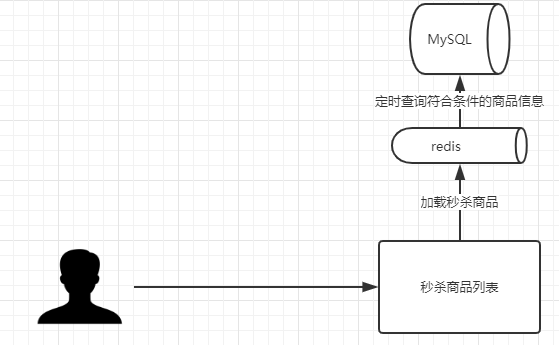
秒杀商品由B端存入Mysql，设置定时任务，每隔一段时间就从Mysql中将符合条件的数据从Mysql中查询出来并存入缓存中，redis以Hash类型进行数据存储。
1）新建服务changgou_service_seckill
2）添加依赖信息，详情如下：
xxxxxxxxxx<dependencies> <dependency> <groupId>com.changgou</groupId> <artifactId>changgou_common_db</artifactId> <version>1.0-SNAPSHOT</version> </dependency> <dependency> <groupId>org.springframework.cloud</groupId> <artifactId>spring-cloud-starter-netflix-eureka-client</artifactId> </dependency> <dependency> <groupId>com.changgou</groupId> <artifactId>changgou_service_order_api</artifactId> <version>1.0-SNAPSHOT</version> </dependency> <dependency> <groupId>com.changgou</groupId> <artifactId>changgou_service_seckill_api</artifactId> <version>1.0-SNAPSHOT</version> </dependency> <dependency> <groupId>com.changgou</groupId> <artifactId>changgou_service_goods_api</artifactId> <version>1.0-SNAPSHOT</version> </dependency> <dependency> <groupId>org.springframework.amqp</groupId> <artifactId>spring-rabbit</artifactId> </dependency> <!--oauth依赖--> <dependency> <groupId>org.springframework.cloud</groupId> <artifactId>spring-cloud-starter-oauth2</artifactId> </dependency></dependencies>3) 添加启动类
x(basePackages = {"com.changgou.seckill.dao"})public class SecKillApplication { public static void main(String[] args) { //TimeZone.setDefault(TimeZone.getTimeZone("Asia/Shanghai")); SpringApplication.run(SecKillApplication.class,args); } public IdWorker idWorker(){ return new IdWorker(1,1); } /** * 设置 redisTemplate 的序列化设置 * @param redisConnectionFactory * @return */ public RedisTemplate<Object, Object> redisTemplate(RedisConnectionFactory redisConnectionFactory) { // 1.创建 redisTemplate 模版 RedisTemplate<Object, Object> template = new RedisTemplate<>(); // 2.关联 redisConnectionFactory template.setConnectionFactory(redisConnectionFactory); // 3.创建 序列化类 GenericToStringSerializer genericToStringSerializer = new GenericToStringSerializer(Object.class); // 6.序列化类，对象映射设置 // 7.设置 value 的转化格式和 key 的转化格式 template.setValueSerializer(genericToStringSerializer); template.setKeySerializer(new StringRedisSerializer()); template.afterPropertiesSet(); return template; }}4) 添加application.yml
xxxxxxxxxxserver port9011spring jackson time-zoneGMT+8 application nameseckill datasource driver-class-namecom.mysql.jdbc.Driver urljdbcmysql//192.168.200.1283306/changgou_seckill?useUnicode=true&characterEncoding=utf-8&useSSL=false&allowMultiQueries=true&serverTimezone=GMT%2b8 usernameroot passwordroot main allow-bean-definition-overridingtrue #当遇到同样名字的时候，是否允许覆盖注册 redis host192.168.200.128 rabbitmq host192.168.200.128eureka client service-url defaultZonehttp//127.0.0.16868/eureka instance prefer-ip-addresstruefeign hystrix enabledtrue client config default#配置全局的feign的调用超时时间 如果 有指定的服务配置 默认的配置不会生效 connectTimeout60000 # 指定的是 消费者 连接服务提供者的连接超时时间 是否能连接 单位是毫秒 readTimeout20000 # 指定的是调用服务提供者的 服务 的超时时间（） 单位是毫秒#hystrix 配置hystrix command default execution timeout #如果enabled设置为false，则请求超时交给ribbon控制 enabledtrue isolation strategySEMAPHORE thread # 熔断器超时时间，默认：1000/毫秒 timeoutInMilliseconds200005) 添加公钥
6) 添加Oauth配置类
xxxxxxxxxx//开启方法上的PreAuthorize注解(prePostEnabled = true, securedEnabled = true)public class ResourceServerConfig extends ResourceServerConfigurerAdapter { //公钥 private static final String PUBLIC_KEY = "public.key"; /*** * 定义JwtTokenStore * @param jwtAccessTokenConverter * @return */ public TokenStore tokenStore(JwtAccessTokenConverter jwtAccessTokenConverter) { return new JwtTokenStore(jwtAccessTokenConverter); } /*** * 定义JJwtAccessTokenConverter * @return */ public JwtAccessTokenConverter jwtAccessTokenConverter() { JwtAccessTokenConverter converter = new JwtAccessTokenConverter(); converter.setVerifierKey(getPubKey()); return converter; } /** * 获取非对称加密公钥 Key * @return 公钥 Key */ private String getPubKey() { Resource resource = new ClassPathResource(PUBLIC_KEY); try { InputStreamReader inputStreamReader = new InputStreamReader(resource.getInputStream()); BufferedReader br = new BufferedReader(inputStreamReader); return br.lines().collect(Collectors.joining("\n")); } catch (IOException ioe) { return null; } } /*** * Http安全配置，对每个到达系统的http请求链接进行校验 * @param http * @throws Exception */ public void configure(HttpSecurity http) throws Exception { //所有请求必须认证通过 http.authorizeRequests() .anyRequest(). authenticated(); //其他地址需要认证授权 }}7) 更改网关路径过滤类，添加秒杀工程过滤信息
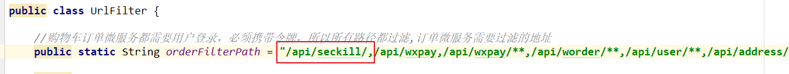
8) 更改网关配置文件，添加请求路由转发
xxxxxxxxxx#秒杀微服务idchanggou_seckill_route urilb//seckill predicatesPath=/api/seckill/** filtersStripPrefix=1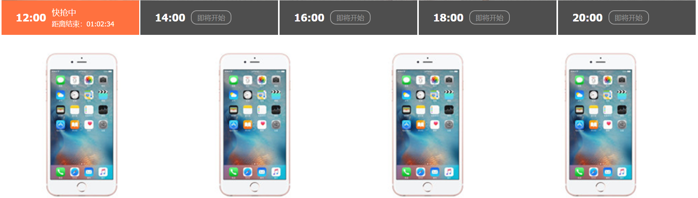
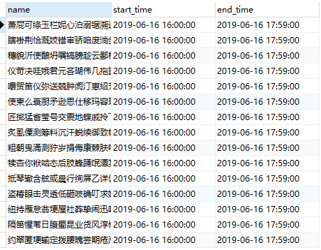
根据产品原型图结合秒杀商品表设计可以得知，秒杀商品是存在开始时间与结束时间的，当前秒杀商品是按照秒杀时间段进行显示，如果当前时间在符合条件的时间段范围之内，则用户可以秒杀购买当前时间段之内的秒杀商品。
缓存数据加载思路：定义定时任务，每天凌晨会进行当天所有时间段秒杀商品预加载。并且在B端进行限制，添加秒杀商品的话，只能添加当前日期+1的时间限制，比如说：当前日期为8月5日，则添加秒杀商品时，开始时间必须为6日的某一个时间段，否则不能添加。
将资源/DateUtil.java添加到公共服务中。基于当前工具类可以进行时间段的计算。
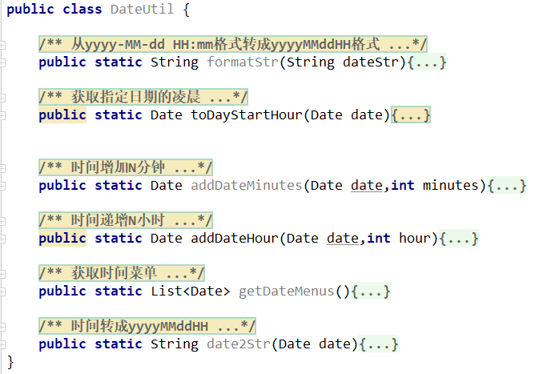
在该工具类中，进行时间计算测试：
xxxxxxxxxxpublic static void main(String[] args) { //定义存储结果的集合 List<Date> dateList = new ArrayList<>(); //获取本日凌晨时间点 Date currentData = toDayStartHour(new Date()); //循环12次 （因为要获取每隔两个时间为一个时间段的值） for (int i=0;i<12;i++){ dateList.add(addDateHour(currentData,i*2)); } for (Date date : dateList) { SimpleDateFormat simpleDateFormat = new SimpleDateFormat("yyyy-MM-dd HH:mm:ss"); String format = simpleDateFormat.format(date); System.out.println(format); }}测试结果：
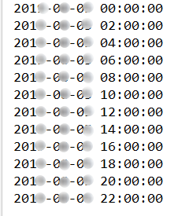
xxxxxxxxxx1.查询所有符合条件的秒杀商品 1) 获取时间段集合并循环遍历出每一个时间段 2) 获取每一个时间段名称,用于后续redis中key的设置 3) 状态必须为审核通过 status=1 4) 商品库存个数>0 5) 秒杀商品开始时间>=当前时间段 6) 秒杀商品结束<当前时间段+2小时 7) 排除之前已经加载到Redis缓存中的商品数据 8) 执行查询获取对应的结果集2.将秒杀商品存入缓存
xxxxxxxxxx秒杀工程新建task包，并新建任务类SeckillGoodsPushTask
业务逻辑：
1）获取秒杀时间段菜单信息
2）遍历每一个时间段，添加该时间段下秒杀商品
2.1）将当前时间段转换为String，作为redis中的key
2.2）查询商品信息（状态为1，库存大于0，秒杀商品开始时间大于当前时间段，秒杀商品结束时间小于当前时间段，当前商品的id不在redis中）
3）添加redis
xxxxxxxxxx/** * 添加秒杀秒伤定时任务 */public class SeckillGoodsPushTask { private SeckillGoodsMapper seckillGoodsMapper; private RedisTemplate redisTemplate; private static final String SECKILL_GOODS_KEY="seckill_goods_"; /** * 定时将秒杀商品存入redis * 暂定为30秒一次，正常业务为每天凌晨触发 */ (cron = "0/30 * * * * ?") public void loadSecKillGoodsToRedis(){ List<Date> dateMenus = DateUtil.getDateMenus(); for (Date dateMenu : dateMenus) { //每次用最好都重新new SimpleDateFormat simpleDateFormat = new SimpleDateFormat("yyyy-MM-dd HH:mm:ss"); SimpleDateFormat simpleDateFormat1 = new SimpleDateFormat("yyyy-MM-dd HH:mm:ss"); String redisExtName = DateUtil.date2Str(dateMenu); Example example = new Example(SeckillGoods.class); Example.Criteria criteria = example.createCriteria(); criteria.andEqualTo("status","1"); criteria.andGreaterThan("stockCount",0); criteria.andGreaterThanOrEqualTo("startTime",simpleDateFormat.format(dateMenu)); criteria.andLessThan("endTime",simpleDateFormat1.format(DateUtil.addDateHour(dateMenu,2))); Set keys = redisTemplate.boundHashOps(SECKILL_KEY + redisExtName).keys(); if (keys!=null && keys.size()>0){ criteria.andNotIn("id",keys); } List<SeckillGoods> seckillGoodsList = seckillGoodsMapper.selectByExample(example); //添加到缓存中 for (SeckillGoods seckillGoods : seckillGoodsList) { redisTemplate.boundHashOps(SECKILL_KEY + redisExtName).put(seckillGoods.getId(),seckillGoods); } } }}秒杀商品首页会显示处于秒杀中以及未开始秒杀的商品。
秒杀首页需要显示不同时间段的秒杀商品信息，然后当用户选择不同的时间段，查询该时间段下的秒杀商品，实现过程分为两大过程：
xxxxxxxxxx1) 加载时间菜单2）加载时间菜单下秒杀商品信息每2个小时就会切换一次抢购活动，所以商品发布的时候，我们将时间定格在2小时内抢购，每次发布商品的时候，商品抢购开始时间和结束时间是这2小时的边界。
每2小时会有一批商品参与抢购，所以我们可以将24小时切分为12个菜单，每个菜单都是个2小时的时间段，当前选中的时间菜单需要根据当前时间判断，判断当前时间属于哪个秒杀时间段，然后将该时间段作为选中的第1个时间菜单。
进入首页时，到后台查询时间菜单信息，然后将第1个菜单的时间段作为key，在Redis中查询秒杀商品集合，并显示到页面，页面每次点击切换不同时间段菜单的时候，都将时间段传入到后台，后台根据时间段获取对应的秒杀商品集合。
1）创建工程changgou_web_seckill,用于秒杀页面渲染
2) 添加依赖
xxxxxxxxxx<dependencies> <dependency> <groupId>com.changgou</groupId> <artifactId>changgou_service_seckill_api</artifactId> <version>1.0-SNAPSHOT</version> </dependency> <dependency> <groupId>org.springframework.boot</groupId> <artifactId>spring-boot-starter-thymeleaf</artifactId> </dependency></dependencies>3) 添加启动类
xxxxxxxxxx(basePackages = "com.changgou.seckill.feign")public class WebSecKillApplication { public static void main(String[] args) { SpringApplication.run(WebSecKillApplication.class,args); } public FeignInterceptor feignInterceptor(){ return new FeignInterceptor(); } /** * 设置 redisTemplate 的序列化设置 * @param redisConnectionFactory * @return */ public RedisTemplate<Object, Object> redisTemplate(RedisConnectionFactory redisConnectionFactory) { // 1.创建 redisTemplate 模版 RedisTemplate<Object, Object> template = new RedisTemplate<>(); // 2.关联 redisConnectionFactory template.setConnectionFactory(redisConnectionFactory); // 3.创建 序列化类 GenericToStringSerializer genericToStringSerializer = new GenericToStringSerializer(Object.class); // 6.序列化类，对象映射设置 // 7.设置 value 的转化格式和 key 的转化格式 template.setValueSerializer(genericToStringSerializer); template.setKeySerializer(new StringRedisSerializer()); template.afterPropertiesSet(); return template; }}4) 添加application.yml
xxxxxxxxxxserver port9104eureka client service-url defaultZonehttp//127.0.0.16868/eureka instance prefer-ip-addresstruefeign hystrix enabledtruespring jackson time-zoneGMT+8 thymeleaf cachefalse application nameseckill-web main allow-bean-definition-overridingtrue redis host192.168.200.128#hystrix 配置hystrix command default execution timeout #如果enabled设置为false，则请求超时交给ribbon控制 enabledtrue isolation strategySEMAPHORE thread timeoutInMilliseconds60000#请求处理的超时时间ribbon ReadTimeout4000 #请求连接的超时时间 ConnectTimeout30005) 添加静态化资源
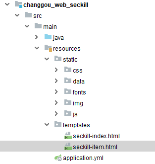
6）对接网关
xxxxxxxxxx#秒杀渲染微服务idchanggou_seckill_web_route urilb//seckill-web predicatesPath=/api/wseckillgoods/** filtersStripPrefix=1时间菜单显示，先运算出每2小时一个抢购，就需要实现12个菜单，可以先计算出每个时间的临界值，然后根据当前时间判断需要显示12个时间段菜单中的哪个菜单，再在该时间菜单的基础之上往后挪4个菜单，一直显示5个时间菜单。
changgou_web_seckill新增控制类SecKillGoodsController
xxxxxxxxxx/****** 获取时间菜单*/(value = "/timeMenus")public List<String> dateMenus(){ List<Date> dateMenus = DateUtil.getDateMenus(); List<String> result = new ArrayList<>(); SimpleDateFormat simpleDateFormat = new SimpleDateFormat("yyyy-MM-dd HH:mm:ss"); for (Date dateMenu : dateMenus) { String format = simpleDateFormat.format(dateMenu); result.add(format); } return result;}修改seckill-index.html
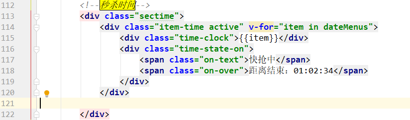
xxxxxxxxxxvar app = new Vue({ el: '#app', data() { return { goodslist: [], dateMenus:[] } }, methods:{ loadMenus:function () { axios.get("/api/wseckill/timeMenus").then(function (response) { app.dateMenus=response.data; //查询当前时间段对应的秒杀商品 }) } }, created:function () { this.loadMenus(); } }) </script>效果如下：
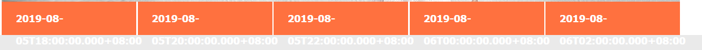
上面菜单循环输出后，会出现如上图效果，时间格式全部不对，我们需要引入一个moment.min.js来格式化时间。
1）引入moment.min.js
2）添加过滤器
xxxxxxxxxx//过滤器Vue.filter("dateFilter", function(date, formatPattern){ return moment(date).format(formatPattern || "YYYY-MM-DD HH:mm:ss");});3) 取值格式化
xxxxxxxxxx<div class="time-clock">{{item | dateFilter('HH:mm')}}</div>重新访问：http://localhost:9104/wseckill/toIndex 。时间菜单效果如下
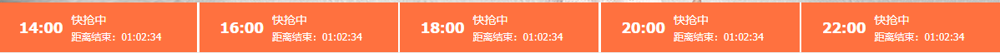
根据原型图，是让当前第一个时间菜单为选中状态，并且加载第一个菜单对应的数据。
我们可以先定义一个ctime=0，用来记录当前选中的菜单下标，因为默认第一个选中，第一个下标为0，所以初始值为0，每次点击对应菜单的时候，将被点击的菜单的下标值赋值给ctime,然后在每个菜单上判断，下标=ctime则让该菜单选中。
1）定义ctime=0
xxxxxxxxxxvar app = new Vue({ el: '#app', data() { return { goodslist: [], dateMenus:[], ctime:0, //当前时间菜单选中的下标 } }})2）页面样式控制：
xxxxxxxxxx<div class="item-time " v-for="(item,index) in dateMenus" :class="['item-time',index==ctime?'active':'']" @click="ctime=index;"> <div class="time-clock">{{item | dateFilter('HH:mm')}}</div> <div class="time-state-on"> <span class="on-text" v-if="index==0">快抢中</span> <span class="on-over" v-if="index==0">距离结束：01:02:34</span> <span class="on-text" v-if="index>0">即将开始</span> <span class="on-over" v-if="index>0">距离开始：01:02:34</span> </div> </div>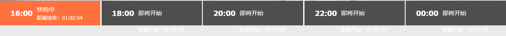
定义一个集合，用于存放五个时间段的倒计时时间差，集合中每一个角标都对应一个倒计时时间差，比如：集合角标为0，对应第一个倒计时时间差。集合角标为1，对应第二个倒计时时间差，依次类推。
因为要有倒计时的效果，所以后续会遍历该时间集合，并让集合中的每一个时间循环递减即可。
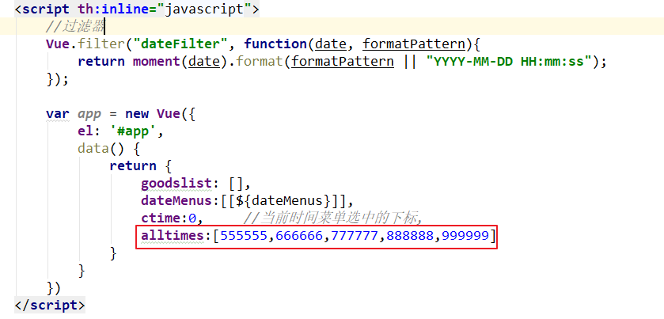
从该集合中获取内容，并更新倒计时时间
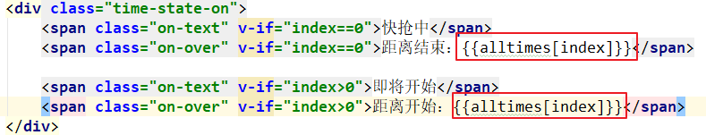
访问页面测试，效果如下所示：
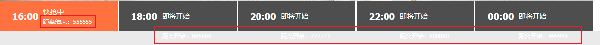
周期执行函数用法如下：
xxxxxxxxxxwindow.setInterval(function(){//要做的事},1000);结束执行周期函数用法如下：
xxxxxxxxxxwindow.clearInterval(timers);具体代码如下：
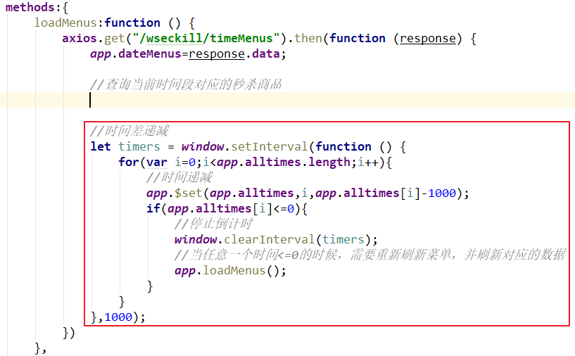
xxxxxxxxxx//时间差递减let timers = window.setInterval(function () { for(var i=0;i<app.alltimes.length;i++){ //时间递减 app.$set(app.alltimes,i,app.alltimes[i]-1000); if(app.alltimes[i]<=0){ //停止倒计时 window.clearInterval(timers); //当任意一个时间<=0的时候，需要重新刷新菜单，并刷新对应的数据 app.loadMenus(); } }},1000);测试访问：http://localhost:9104/wseckill/toIndex 。可以发现每一个时间段的时间都在每秒递减。
将此工具引入页面js方法中，用于时间计算
xxxxxxxxxx//将毫秒转换成时分秒timedown:function(num) { var oneSecond = 1000; var oneMinute=oneSecond*60; var oneHour=oneMinute*60 //小时 var hours =Math.floor(num/oneHour); //分钟 var minutes=Math.floor((num%oneHour)/oneMinute); //秒 var seconds=Math.floor((num%oneMinute)/oneSecond); //拼接时间格式 var str = hours+':'+minutes+':'+seconds; return str;}修改时间差显示设置
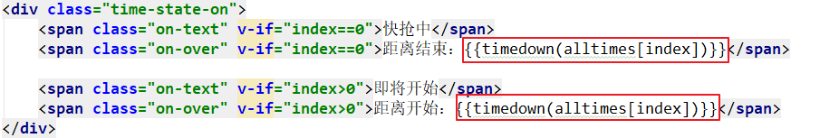
xxxxxxxxxx<div class="time-state-on"> <span class="on-text" v-if="index==0">快抢中</span> <span class="on-over" v-if="index==0">距离结束：{{timedown(alltimes[index])}}</span> <span class="on-text" v-if="index>0">即将开始</span> <span class="on-over" v-if="index>0">距离开始：{{timedown(alltimes[index])}}</span></div>重新访问进行测试。效果如下：
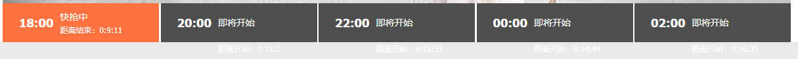
现在页面中，对于倒计时时间集合内的数据，暂时写的为假数据，现在需要让集合内容的数据是经过计算得出的。第一个是距离结束时间倒计时，后面的4个都是距离开始倒计时，每个倒计时其实就是2个时差，计算方式如下：
xxxxxxxxxx第1个时差：第2个抢购开始时间-当前时间，距离结束时间第2个时差：第2个抢购开始时间-当前时间，距离开始时间第3个时差：第3个抢购开始时间-当前时间，距离开始时间第4个时差：第4个抢购开始时间-当前时间，距离开始时间第5个时差：第5个抢购开始时间-当前时间，距离开始时间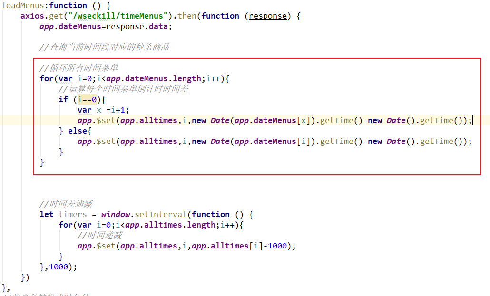
xxxxxxxxxxloadMenus:function () { axios.get("/wseckill/timeMenus").then(function (response) { app.dateMenus=response.data; //查询当前时间段对应的秒杀商品 //循环所有时间菜单 for(var i=0;i<app.dateMenus.length;i++){ //运算每个时间菜单倒计时时间差 if (i==0){ var x =i+1; app.$set(app.alltimes,i,new Date(app.dateMenus[x]).getTime()-new Date().getTime()); } else{ app.$set(app.alltimes,i,new Date(app.dateMenus[i]).getTime()-new Date().getTime()); } } //时间差递减 let timers = window.setInterval(function () { for(var i=0;i<app.alltimes.length;i++){ //时间递减 app.$set(app.alltimes,i,app.alltimes[i]-1000); } },1000); })}当前已经完成了秒杀时间段菜单的显示，那么当用户在切换不同的时间段的时候，需要按照用户所选择的时间去显示相对应时间段下的秒杀商品
xxxxxxxxxx("/seckillgoods")public class SecKillController { private SecKillGoodsService secKillGoodsService; /** * 查询秒杀商品列表 * @param time * @return */ ("/list") public Result<List<SeckillGoods>> list(("time") String time){ List<SeckillGoods> seckillGoodsList = secKillGoodsService.list(time); return new Result<List<SeckillGoods>>(true, StatusCode.OK,"查询秒杀商品成功",seckillGoodsList); }}xxxxxxxxxxpublic interface SecKillGoodsService { List<SeckillGoods> list(String time);}xxxxxxxxxxpublic class SecKillGoodsServiceImpl implements SecKillGoodsService { private RedisTemplate redisTemplate; private static final String SECKILL_KEY = "SeckillGoods_"; /** * 查询秒杀商品列表 * @param time * @return */ public List<SeckillGoods> list(String time) { return redisTemplate.boundHashOps(SECKILL_KEY+time).values(); }}更改秒杀微服务的ResourceServerConfig类，对查询方法放行
xxxxxxxxxxpublic void configure(HttpSecurity http) throws Exception { //所有请求必须认证通过 http.authorizeRequests() //下边的路径放行 .antMatchers( "/seckillgoods/list/**"). //配置地址放行 permitAll() .anyRequest(). authenticated(); //其他地址需要认证授权}xxxxxxxxxx(name="seckill")public interface SecKillFeign { /** * 查询秒杀商品列表 * @param time * @return */ ("/seckillgoods/list") public Result<List<SeckillGoods>> list(("time") String time);}添加feign接口扫描
xxxxxxxxxx(basePackages = "com.changgou.seckill.feign")注入secKillFeign，并添加获取秒杀商品列表方法实现
xxxxxxxxxx/** * 获取秒杀商品列表 * 默认当前时间 */("/list")public Result<List<SeckillGoods>> list(String time){ Result<List<SeckillGoods>> listResult = secKillFeign.list(DateUtil.formatStr(time)); return listResult;}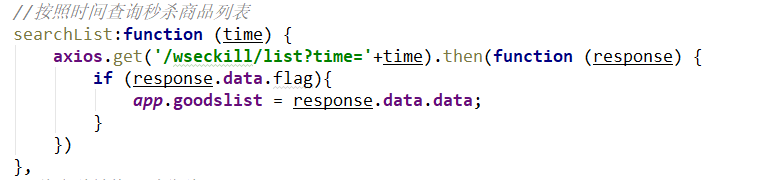
xxxxxxxxxx//按照时间查询秒杀商品列表searchList:function (time) { axios.get('/wseckill/list?time='+time).then(function (response) { if (response.data.flag){ app.goodslist = response.data.data; } })}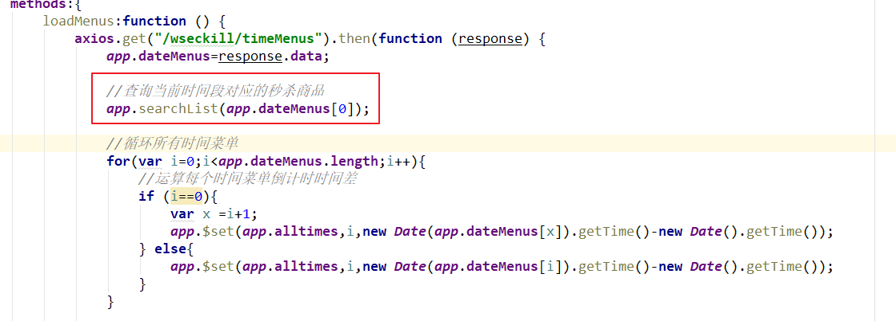
xxxxxxxxxx//查询当前时间段对应的秒杀商品app.searchList(app.dateMenus[0]);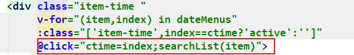
xxxxxxxxxx<div class="item-time " v-for="(item,index) in dateMenus" :class="['item-time',index==ctime?'active':'']" @click="ctime=index;searchList(item)">因为当前业务设定为用户秒杀商品为sku，所以当用户点击立即抢购按钮的时候，则直接进行下单操作。
在秒杀首页添加下单方法
xxxxxxxxxx//秒杀下单add:function(id){ app.msg ='正在下单'; axios.get("/api/wseckillorder/add?time="+moment(app.dateMenus[0]).format("YYYYMMDDHH")+"&id="+id).then(function (response) { if (response.data.flag){ app.msg='抢单成功，即将进入支付!'; }else{ app.msg='抢单失败'; } })}修改抢购按钮，添加事件
xxxxxxxxxx<a class='sui-btn btn-block btn-buy' href='javascript:void(0)' @click="add(item.id)">立即抢购</a>